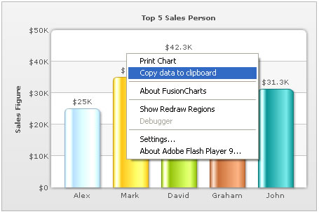

| Exporting Chart Data using context menu | ||||||||||||
FusionCharts XT allows you to export data from your charts in CSV format. The export of data can be triggered in two ways:
Let us study both of them one by one. |
||||||||||||
| Setting up the chart to export data from context menu | ||||||||||||
|
To allow export of data using context menu, you need to specify the following in data: |
||||||||||||
<chart yAxisName='Sales Figure' caption='Top 5 Sales Person' numberPrefix='$' useRoundEdges='1' showExportDataMenuItem='1'>
<set label='Alex' value='25000' />
<set label='Mark' value='35000' />
<set label='David' value='42300' />
<set label='Graham' value='35300' />
<set label='John' value='31300' />
</chart>{
"chart":{
"yaxisname":"Sales Figure",
"caption":"Top 5 Sales Person",
"numberprefix":"$",
"useroundedges":"1",
"showexportdatamenuitem":"1"
},
"data":[
{ "label":"Alex", "value":"25000" },
{ "label":"Mark", "value":"35000" },
{ "label":"David", "value":"42300" },
{ "label":"Graham", "value":"35300" },
{ "label":"John", "value":"31300" }
]
}
|
||||||||||||
As soon as showExportDataMenuItem='1' is set in the chart, a new item is added to the chart's context menu, as shown below: |
||||||||||||
|  | ||||||||||||
The label of this menu item can be customized by setting: <chart ... exportDataMenuItemLabel='Copy the data of this chart' ...> When you select this item, the data of this chart will be copied to your clipboard. If you open any text editor and paste the content of the clipboard, you will get something as under: |
||||||||||||
"Label","Sales Figure" "Alex","25000" "Mark","35000" "David","42300" "Graham","35300" "John","31300" |
||||||||||||
This is basically the CSV representation of your chart's data. In case of Multi-series charts, the data will have more columns (one for each dataset). Let us next see how to format the output CSV data using various export related XML attributes that FusionCharts XT exposes. |
||||||||||||
| Customizing the output CSV format | ||||||||||||
You can customize the following aspects of the output CSV data:
The following attributes help in configuring this: |
||||||||||||
|
||||||||||||
| Output CSV data format for Multi-series/Stacked/Combination charts | ||||||||||||
|
Data specified for the chart: |
||||||||||||
<chart caption='Country Comparison' showLabels='1' showvalues='0' decimals='0' numberPrefix='$' showExportDataMenuItem='1'>
<categories>
<category label='Austria' />
<category label='Brazil' />
<category label='France' />
<category label='Germany' />
<category label='USA' />
</categories>
<dataset seriesName='1996' color='AFD8F8' showValues='0'>
<set value='25601.34' />
<set value='20148.82' />
<set value='17372.76' />
<set value='35407.15' />
<set value='38105.68' />
</dataset>
<dataset seriesName='1997' color='F6BD0F' showValues='0'>
<set value='57401.85' />
<set value='41941.19' />
<set value='45263.37' />
<set value='117320.16' />
<set value='114845.27' />
</dataset>
<dataset seriesName='1998' color='8BBA00' showValues='0'>
<set value='45000.65' />
<set value='44835.76' />
<set value='18722.18' />
<set value='77557.31' />
<set value='92633.68' />
</dataset>
</chart>{
"chart":{
"caption":"Country Comparison", "showlabels":"1", "showvalues":"0", "decimals":"0", "numberprefix":"$", "showexportdatamenuitem":"1" },
"categories":[
{
"category":[
{ "label":"Austria" },
{ "label":"Brazil" },
{ "label":"France" },
{ "label":"Germany" },
{ "label":"USA" }
]
}
],
"dataset":[{ "seriesname":"1996", "color":"AFD8F8", "showvalues":"0",
"data":[
{ "value":"25601.34" },
{ "value":"20148.82" },
{ "value":"17372.76" },
{ "value":"35407.15" },
{ "value":"38105.68" }
]
},
{ "seriesname":"1997", "color":"F6BD0F", "showvalues":"0",
"data":[
{ "value":"57401.85" },
{ "value":"41941.19" },
{ "value":"45263.37" },
{ "value":"117320.16" },
{ "value":"114845.27" }
]
},
{ "seriesname":"1998", "color":"8BBA00", "showvalues":"0",
"data":[
{ "value":"45000.65" },
{ "value":"44835.76" },
{ "value":"18722.18" },
{ "value":"77557.31" },
{ "value":"92633.68" }
]
}
]
}
|
||||||||||||
Corresponding CSV output: |
||||||||||||
"Label","1996","1997","1998" "Austria","25601.34","57401.85","45000.65" "Brazil","20148.82","41941.19","44835.76" "France","17372.76","45263.37","18722.18" "Germany","35407.15","117320.16","77557.31" "USA","38105.68","114845.27","92633.68" |
||||||||||||
Here, since the XML did not specify xAxisName attribute, "Label" has been put in CSV data as title for x-axis labels. The first line then contains series names of all the datasets present in the XML. Thereafter, each line of data first contains the x-axis label (category label) and value of each of those datasets for this label. In the next section, we will see how to access this data using JavaScript API. |